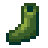
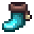
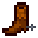
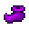
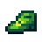
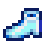

Immunità
Jump to navigation
Jump to search
L'Immunità  è una statistica che modifica la possibilità di subire dei debuff. Non ha effetto sulla durata dell'invulnerabilità dopo che si viene colpiti.
è una statistica che modifica la possibilità di subire dei debuff. Non ha effetto sulla durata dell'invulnerabilità dopo che si viene colpiti.
Ogni punto di Immunità riduce la possibilità di ricevere un debuff del 10%. Per esempio quando si indossano le scarpe del genio, che danno 6 punti di Immunità, la possibilità di ricevere un debuff è 40%.[1]
Equipaggiamento
I seguenti oggetti hanno un effetto sull'Immunità.
Scarpe
| Image | Name | Effect |
|---|---|---|
| Stivali di cuoio | ||
|  | Stivali di gomma | |
| Stivali da tundra | ||
|  | Stivali termici | |
| Stivali del camminafuoco | ||
| Stivali spaziali | ||
|  | Stivali da cowboy | |
| Stivali oscuri | ||
|  | Scarpe del genio | |
|  | Scarpe del lepricauno | |
| Stivali magici di Emily | ||
| Scarpe del clown di brace | ||
| Stivali della sirena | ||
|  | Scarpe di cristallo |
Anelli
| Image | Name | Effect |
|---|---|---|
| Fascia dell'immunità |
Riferimenti
- ↑ Vedi DebuffingProjectile::behaviorOnCollisionWithPlayer nel codice del gioco.
Storia
- 1.5: L'Immunità riduce la possibilità di qualsiasi debuff, al posto di solo quelli causati da proiettili.
| Abilità e Statistiche | |
|---|---|
| Abilità | Fattoria • Estrazione • Raccolta selvatica • Pesca • Combattimento |
| Statistiche | Attacco • Chance critico • Difesa • Fortuna • Immunità • Magnetismo • Peso • Potere Critico • Velocità |